PyTorch 从里到外
从一行 y = x @ w 在 PyTorch 里经过了什么讲起：Tensor 内存布局、分派器、自动求导、GPU 异步执行、torch.compile，再到典型用法、常用算子、多机多卡、训练调优和融合算子开发。共 36 章，每章配一个动画。
每章的结构：本章回答的问题 → 讲解（白话类比 → 公式 → 例子）→ 练习与作答记录 → 口诀 → 复习卡片 → 延伸阅读。
怎么看
- 讲义：每章正文里嵌着 GIF 动画，打开就能播放。
- 可交互动画：章节标题下的"打开本章可交互动画"，或点下面的卡片进入讲义后再打开。按钮：▶ 播放自动演示，→ 单步自己控制节奏，↺ 从头开始；有滑块的可以拖动参数。
- 复习卡片：先看问题自己答，再点开折叠的答案核对。
全部章节
 第 1 章PyTorch 做了什么：一行 y = x @ w 的旅程
第 1 章PyTorch 做了什么：一行 y = x @ w 的旅程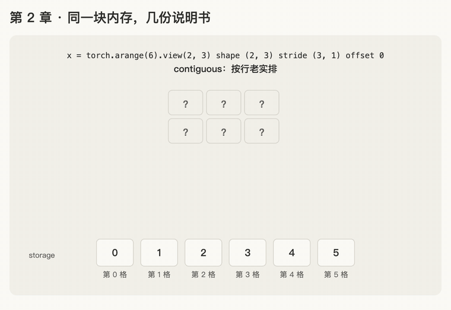
第 2 章Tensor 内部：一块内存 + 一张"怎么读"的说明书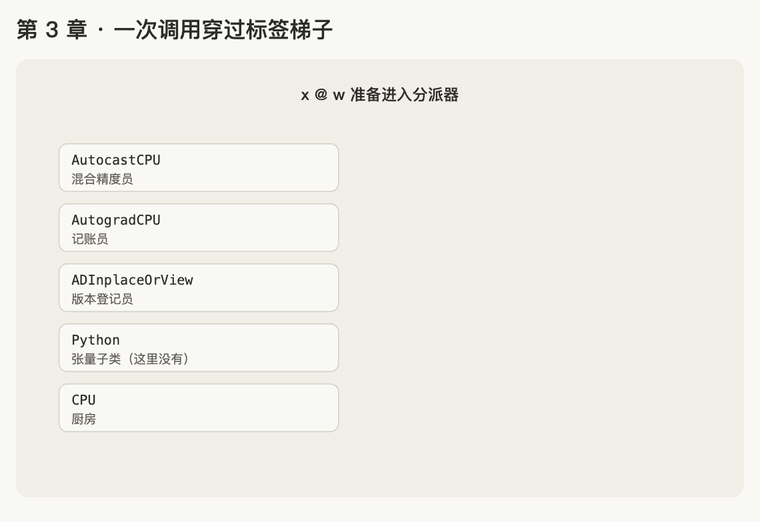
第 3 章分派器：按标签一层层处理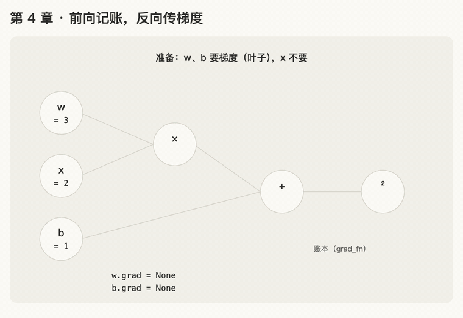
第 4 章Autograd：账本怎么记、怎么倒着算 第 5 章GPU 语义：下单就走、何时会等、显存怎么借
第 5 章GPU 语义：下单就走、何时会等、显存怎么借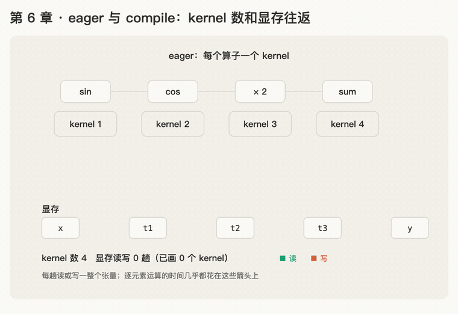
第 6 章eager 与 graph：torch.compile 里面的三道工序 第 7 章nn.Module：一棵自动登记参数的积木树
第 7 章nn.Module：一棵自动登记参数的积木树 第 8 章Dataset 与 DataLoader：给 GPU 备菜的流水线
第 8 章Dataset 与 DataLoader：给 GPU 备菜的流水线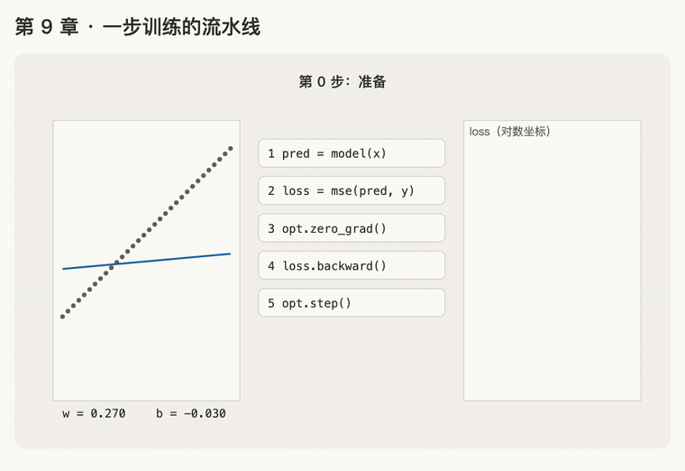
第 9 章训练循环：五行主干 + 三件护具 第 10 章保存与加载：存清单、不存对象，断点要存全
第 10 章保存与加载：存清单、不存对象，断点要存全 第 11 章形状与广播：从右往左对齐，1 可以拉伸
第 11 章形状与广播：从右往左对齐，1 可以拉伸 第 12 章索引与散射：按掩码挑、按下标取、按下标写回
第 12 章索引与散射：按掩码挑、按下标取、按下标写回 第 13 章规约、矩阵乘与数值稳定
第 13 章规约、矩阵乘与数值稳定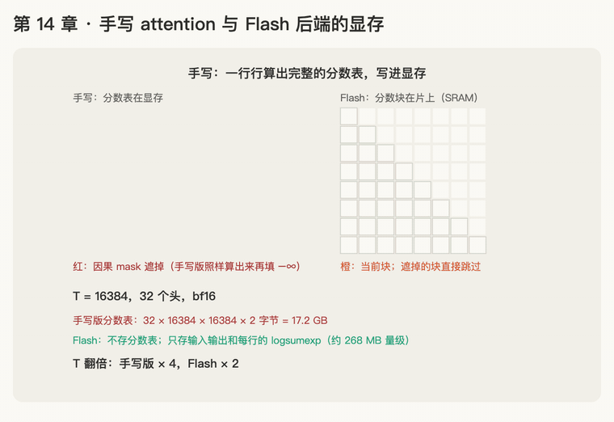
第 14 章nn.functional：归一化、激活与注意力 第 15 章损失与优化器：cross_entropy 的细节和 AdamW 的一步
第 15 章损失与优化器：cross_entropy 的细节和 AdamW 的一步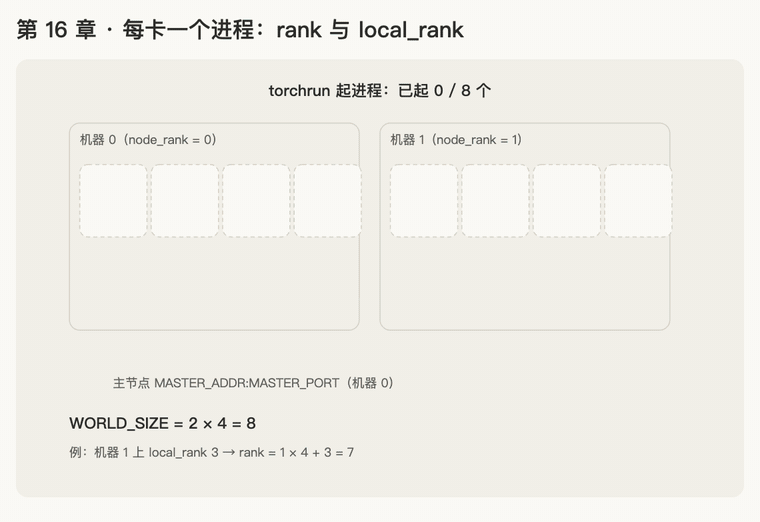
第 16 章进程模型：一张卡一个进程，靠编号分工 第 17 章集合通信：五个动词和它们的代价
第 17 章集合通信：五个动词和它们的代价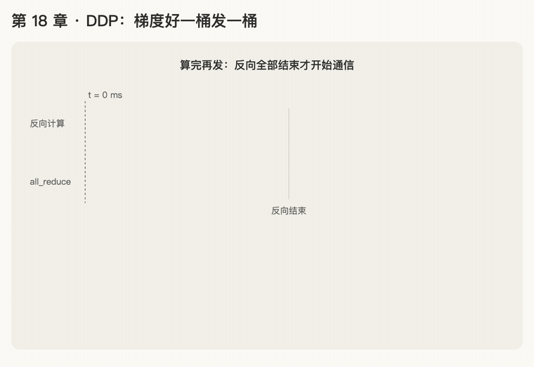
第 18 章DDP：每卡一份模型，反向时边算边对答案 第 19 章FSDP2：每卡只存一片，用到时再拼
第 19 章FSDP2：每卡只存一片，用到时再拼 第 20 章DeviceMesh、DTensor 与张量并行
第 20 章DeviceMesh、DTensor 与张量并行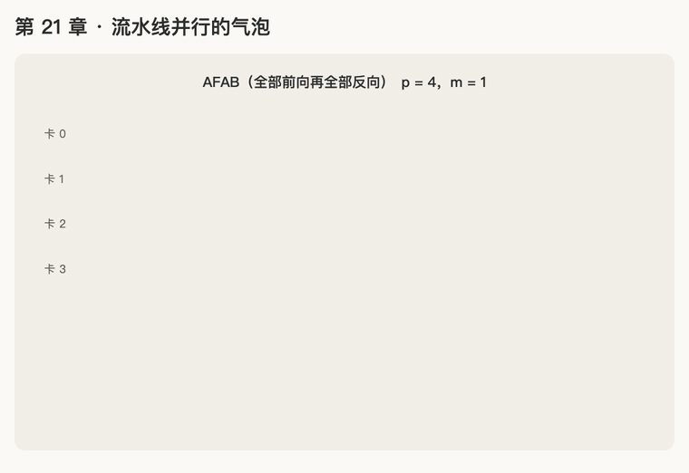
第 21 章流水线、上下文、专家并行，以及怎么组合 第 22 章分布式存档与排错：每卡存一片，卡死先查顺序
第 22 章分布式存档与排错：每卡存一片，卡死先查顺序 第 23 章调优方法论：先算账，再测量，只改瓶颈
第 23 章调优方法论：先算账，再测量，只改瓶颈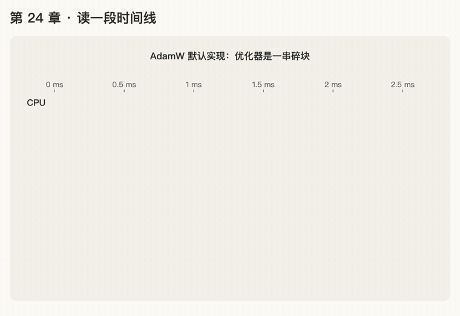
第 24 章profiler：给训练拍一段"录像"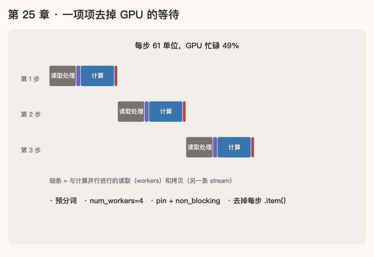
第 25 章让 GPU 别等：数据管道与同步点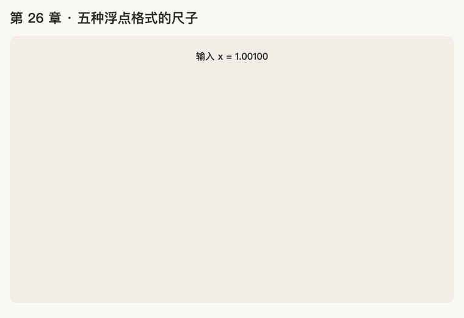
第 26 章混合精度：bf16、fp16、TF32、FP8 怎么选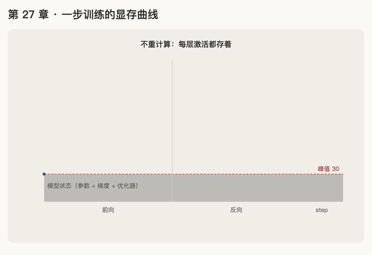
第 27 章显存：谁占了、怎么省、怎么看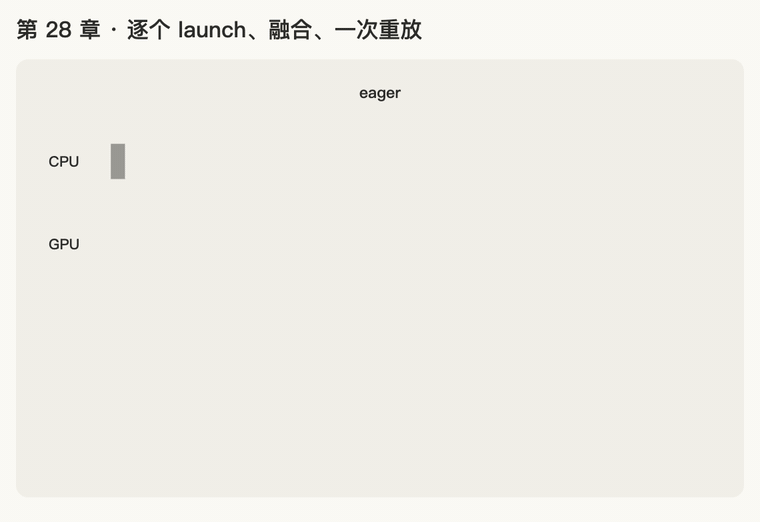
第 28 章训练里用 compile 与 CUDA Graphs：消灭碎活和启动开销 第 29 章为什么融合能变快：算力受限与访存受限
第 29 章为什么融合能变快：算力受限与访存受限 第 30 章推理模式与 KV cache：生成一个 token 要做什么
第 30 章推理模式与 KV cache：生成一个 token 要做什么 第 31 章读 Inductor 生成的代码：它已经帮你融了什么
第 31 章读 Inductor 生成的代码：它已经帮你融了什么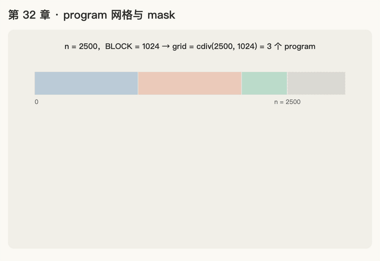
第 32 章Triton 编程模型：一个 program 处理一块数据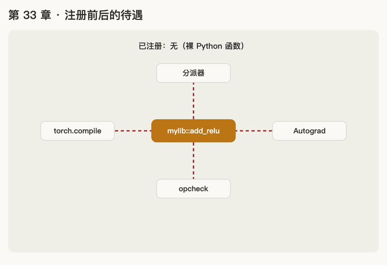
第 33 章注册自定义算子：让你的 kernel 成为 PyTorch 的"一等公民" 第 34 章C++ / CUDA 扩展：TORCH_LIBRARY 把 C++ 函数登记进分派表
第 34 章C++ / CUDA 扩展：TORCH_LIBRARY 把 C++ 函数登记进分派表 第 35 章量化与导出：模型变小、脱离 Python 部署
第 35 章量化与导出：模型变小、脱离 Python 部署 第 36 章benchmark 与正确性：测准、对齐、再上线
第 36 章benchmark 与正确性：测准、对齐、再上线